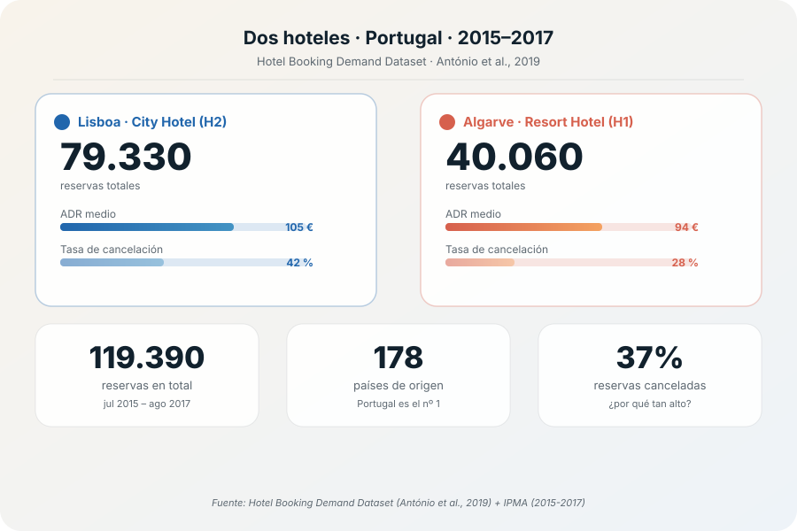
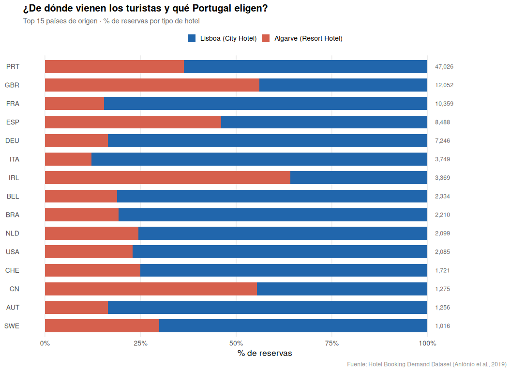
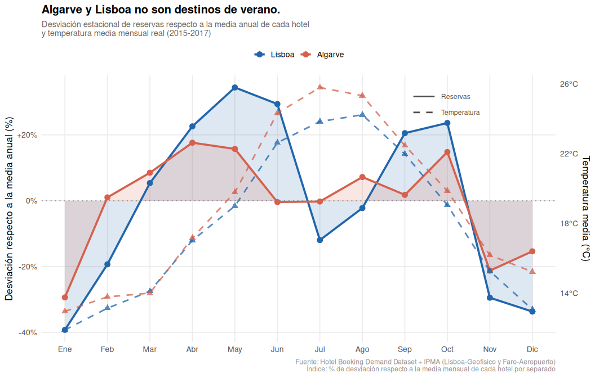
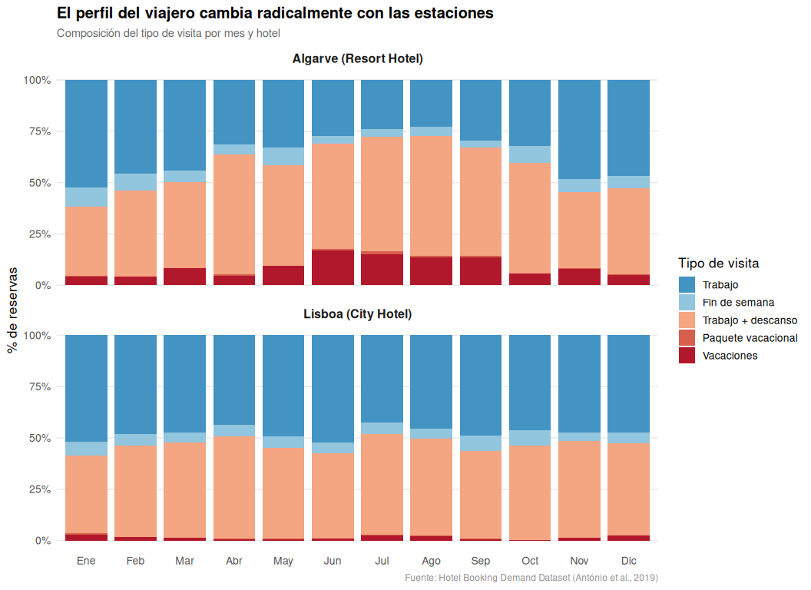
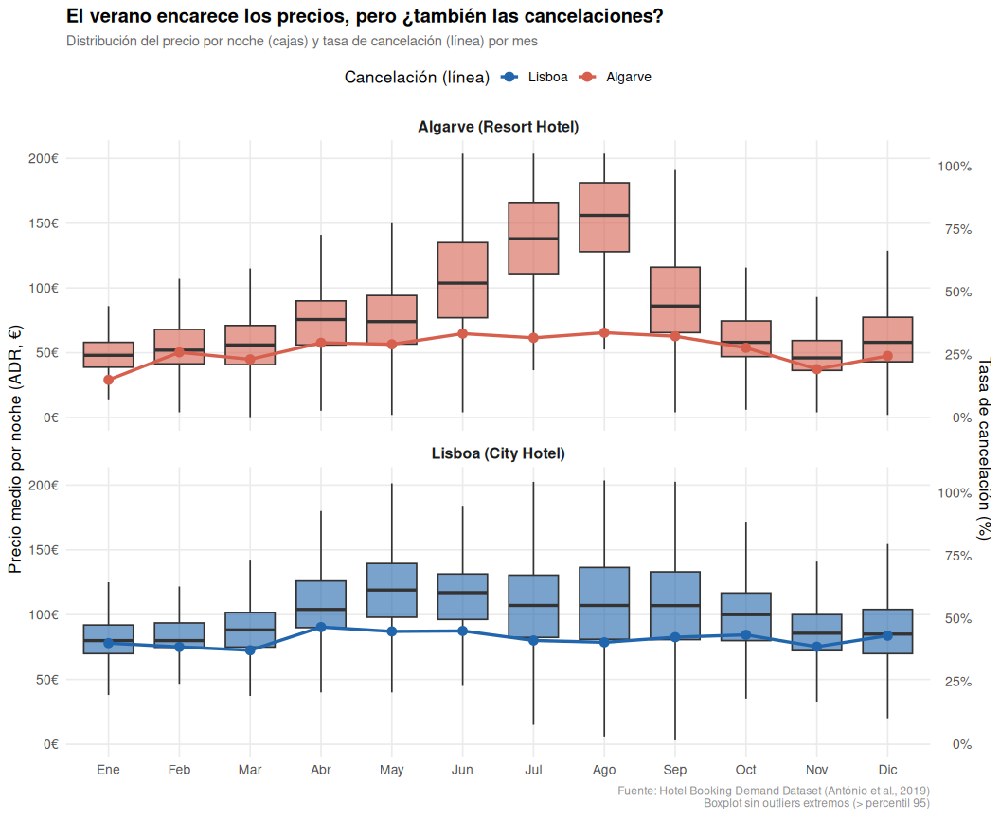

PEC 3 · Visualización de datos · UOC · Máster en Ciencia de Datos
Dos hoteles, dos Portugales
119.390 reservas. Dos ciudades. Y una sorpresa:
el verano no es lo que parece en Portugal.
Autor: Alex Chaume García ·
Datasets:
Hotel Booking Demand (António et al., 2019) ·
IPMA
(Lisboa-Geofísico y Faro-Aeropuerto, 2015–2017) Herramientas: R · ggplot2 · HTML / CSS / JavaScript · Scrollama
↓ Scroll para avanzarData Storytelling
Introducción · El dataset
Dos hoteles en Portugal, 119.390 reservas
Entre julio de 2015 y agosto de 2017, dos hoteles reales registraron
cada movimiento de sus huéspedes. H2, un hotel urbano en Lisboa con 79.330
reservas. H1, un resort en el Algarve con 40.060.
El 37% de todas las reservas acabó cancelado. ¿Por qué?
Fuente: Hotel Booking Demand Dataset · António et al., 2019

Introducción · El dataset
Dos hoteles en Portugal, 119.390 reservas
El dataset cubre reservas entre julio de 2015 y agosto de 2017.
H1 es un resort en el Algarve (40.060 reservas).
H2 es un hotel urbano en Lisboa (79.330 reservas).
El 37% de todas las reservas fue cancelado.
Esa cifra será la clave de toda la historia.
AlgarveLisboa
Visualización 1 · Los protagonistas
¿De dónde vienen y qué Portugal eligen?
Portugal (PRT) y el Reino Unido (GBR) dominan el Algarve.
Francia (FRA) y Alemania (DEU) eligen Lisboa.
España (ESP) se reparte entre los dos.
El origen del turista ya predice el destino.

Visualización 2 · Clímax · El gran giro
El Algarve y Lisboa no son destinos de verano
Al filtrar solo las reservas confirmadas, el patrón se invierte.
El Algarve tiene su pico en octubre (+15%)
y un valle en julio (−6%).
Lisboa alcanza su máximo en mayo (+30%).
Julio — el mes más turístico en apariencia — es el más vacío para ambos.

Visualización 3 · Acción descendente
El perfil del viajero cambia radicalmente con las estaciones
En verano dominan las vacaciones puras y los paquetes — que se cancelan más.
En otoño e invierno, el viajero de trabajo toma el relevo,
especialmente en Lisboa.
Cada mes tiene su viajero. Cada viajero, su Portugal.

Visualización 4 · Precio y cancelaciones
El verano encarece el Algarve... y lo llena de dudas
El precio del Algarve pasa de 60€ en enero
a 146€ en agosto — un incremento del 144%.
Pero la tasa de cancelación también crece con el calor.
Lisboa mantiene precios más estables pero una cancelación
estructuralmente más alta durante todo el año.

Conclusión · Una lección
Dos hoteles, dos Portugales, una lección
El Algarve cobra más en verano pero pierde más reservas.
El turista inteligente elige octubre:
sol sin masificación, 22°C y precios en caída.
Lisboa es un destino de negocios disfrazado de turismo urbano.
Los datos siempre cuentan una historia más honesta que la intuición.